|
|||||||||||||||||||||||||||||||||||||||||||||||||||||||||||
|
Part I Upgrading With Solaris Live Upgrade 1. Where to Find Solaris Installation Planning Information 2. Solaris Live Upgrade (Overview) Solaris Live Upgrade Introduction 3. Solaris Live Upgrade (Planning) 4. Using Solaris Live Upgrade to Create a Boot Environment (Tasks) 5. Upgrading With Solaris Live Upgrade (Tasks) 6. Failure Recovery: Falling Back to the Original Boot Environment (Tasks) 7. Maintaining Solaris Live Upgrade Boot Environments (Tasks) 8. x86: Locating the GRUB Menu's menu.lst File (Tasks) 9. Upgrading the Solaris OS on a System With Non-Global Zones Installed 10. Solaris Live Upgrade (Examples) 11. Solaris Live Upgrade (Command Reference) |
Solaris Live Upgrade ProcessThe following overview describes the tasks necessary to create a copy of the current boot environment, upgrade the copy, and switch the upgraded copy to become the active boot environment. The fallback process of switching back to the original boot environment is also described. Figure 2-1 describes this complete Solaris Live Upgrade process. Figure 2-1 Solaris Live Upgrade Process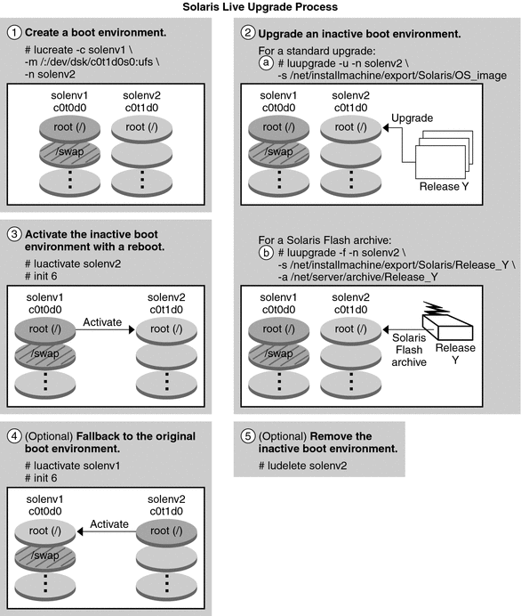The following sections describe the Solaris Live Upgrade process.
Creating a Boot EnvironmentThe process of creating a boot environment provides a method of copying critical file systems from an active boot environment to a new boot environment. The disk is reorganized if necessary, file systems are customized, and the critical file systems are copied to the new boot environment. File System TypesSolaris Live Upgrade distinguishes between two file system types: critical file systems and shareable. The following table describes these file system types.
Creating RAID-1 Volumes on File SystemsSolaris Live Upgrade can create a boot environment with RAID-1 volumes (mirrors) on file systems. For an overview, see Creating a Boot Environment With RAID-1 Volume File Systems. Copying File SystemsThe process of creating a new boot environment begins by identifying an unused slice where a critical file system can be copied. If a slice is not available or a slice does not meet the minimum requirements, you need to format a new slice. After the slice is defined, you can reconfigure the file systems on the new boot environment before the file systems are copied into the directories. You reconfigure file systems by splitting and merging them, which provides a simple way of editing the vfstab to connect and disconnect file system directories. You can merge file systems into their parent directories by specifying the same mount point. You can also split file systems from their parent directories by specifying different mount points. After file systems are configured on the inactive boot environment, you begin the automatic copy. Critical file systems are copied to the designated directories. Shareable file systems are not copied, but are shared. The exception is that you can designate some shareable file systems to be copied. When the file systems are copied from the active to the inactive boot environment, the files are directed to the new directories. The active boot environment is not changed in any way.
Examples of Creating a New Boot EnvironmentThe following figures illustrate various ways of creating new boot environments. Figure 2-2 shows that critical file system root (/) has been copied to another slice on a disk to create a new boot environment. The active boot environment contains the root (/) file system on one slice. The new boot environment is an exact duplicate with the root (/) file system on a new slice. The file systems /swap and /export/home are shared by the active and inactive boot environments. Figure 2-2 Creating an Inactive Boot Environment – Copying the root (/) File System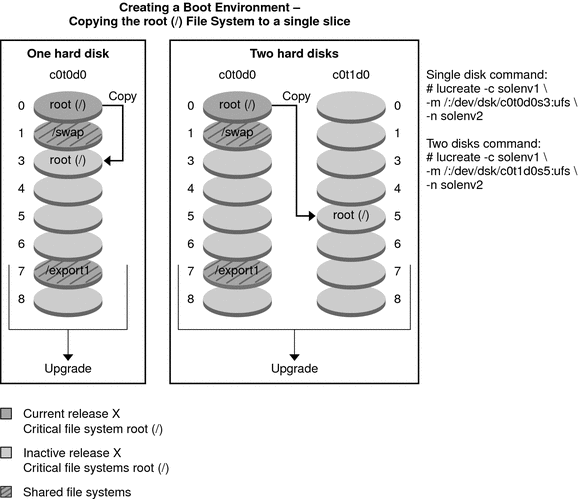Figure 2-3 shows critical file systems that have been split and have been copied to slices on a disk to create a new boot environment. The active boot environment contains the root (/) file system on one slice. On that slice, the root (/) file system contains the /usr, /var, and /opt directories. In the new boot environment, the root (/) file system is split and /usr and /opt are put on separate slices. The file systems /swap and /export/home are shared by both boot environments. Figure 2-3 Creating an Inactive Boot Environment – Splitting File Systems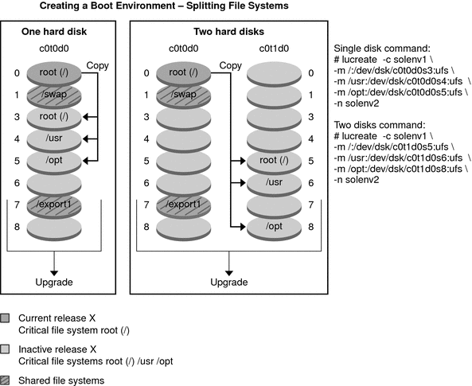Figure 2-4 shows critical file systems that have been merged and have been copied to slices on a disk to create a new boot environment. The active boot environment contains the root (/) file system, /usr, /var, and /opt with each file system on their own slice. In the new boot environment, /usr and /opt are merged into the root (/) file system on one slice. The file systems /swap and /export/home are shared by both boot environments. Figure 2-4 Creating an Inactive Boot Environment – Merging File Systems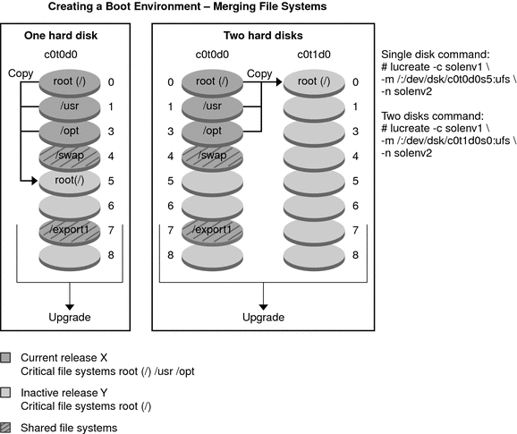Creating a Boot Environment With RAID-1 Volume File SystemsSolaris Live Upgrade uses Solaris Volume Manager technology to create a boot environment that can contain file systems encapsulated in RAID-1 volumes. Solaris Volume Manager provides a powerful way to reliably manage your disks and data by using volumes. Solaris Volume Manager enables concatenations, stripes, and other complex configurations. Solaris Live Upgrade enables a subset of these tasks, such as creating a RAID-1 volume for the root (/) file system. A volume can group disk slices across several disks to transparently appear as a single disk to the OS. Solaris Live Upgrade is limited to creating a boot environment for the root (/) file system that contains single-slice concatenations inside a RAID-1 volume (mirror). This limitation is because the boot PROM is restricted to choosing one slice from which to boot. How to Manage Volumes With Solaris Live UpgradeWhen creating a boot environment, you can use Solaris Live Upgrade to manage the following tasks.
You use the lucreate command with the -m option to create a mirror, detach submirrors, and attach submirrors for the new boot environment. Note - If VxVM volumes are configured on your current system, the lucreate command can create a new boot environment. When the data is copied to the new boot environment, the Veritas file system configuration is lost and a UFS file system is created on the new boot environment.
Mapping Solaris Volume Manager Tasks to Solaris Live UpgradeSolaris Live Upgrade manages a subset of Solaris Volume Manager tasks. Table 2-1 shows the Solaris Volume Manager components that Solaris Live Upgrade can manage. Table 2-1 Classes of Volumes
Examples of Using Solaris Live Upgrade to Create RAID-1 VolumesThe following examples present command syntax for creating RAID-1 volumes for a new boot environment. Create RAID-1 Volume on Two Physical DisksFigure 2-5 shows a new boot environment with a RAID-1 volume (mirror) that is created on two physical disks. The following command created the new boot environment and the mirror. # lucreate -n second_disk -m /:/dev/md/dsk/d30:mirror,ufs \ -m /:/dev/dsk/c0t1d0s0,/dev/md/dsk/d31:attach -m /:/dev/dsk/c0t2d0s0,/dev/md/dsk/d32:attach \ -m -:/dev/dsk/c0t1d0s1:swap -m -:/dev/dsk/c0t2d0s1:swap This command performs the following tasks:
Figure 2-5 Create a Boot Environment and Create a Mirror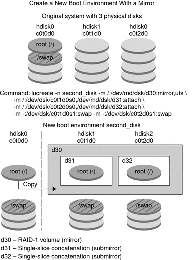Create a Boot Environment and Use the Existing SubmirrorFigure 2-6 shows a new boot environment that contains a RAID-1 volume (mirror). The following command created the new boot environment and the mirror. # lucreate -n second_disk -m /:/dev/md/dsk/d20:ufs,mirror \ -m /:/dev/dsk/c0t1d0s0:detach,attach,preserve This command performs the following tasks:
Figure 2-6 Create a Boot Environment and Use the Existing Submirror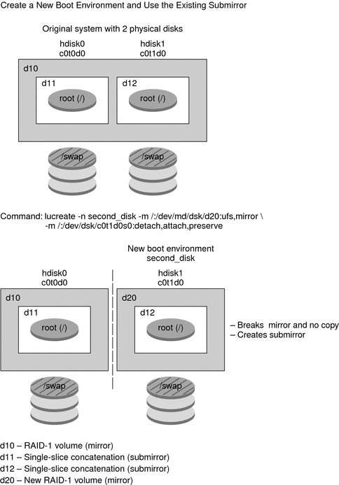Upgrading a Boot EnvironmentAfter you have created a boot environment, you can perform an upgrade on the boot environment. As part of that upgrade, the boot environment can contain RAID-1 volumes (mirrors) for any file systems. Or the boot environment can have non-global zones installed. The upgrade does not affect any files in the active boot environment. When you are ready, you activate the new boot environment, which then becomes the current boot environment.
Figure 2-7 shows an upgrade to an inactive boot environment. Figure 2-7 Upgrading an Inactive Boot Environment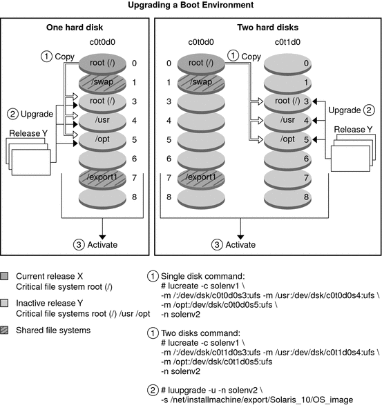Rather than an upgrade, you can install a Solaris Flash archive on a boot environment. The Solaris Flash installation feature enables you to create a single reference installation of the Solaris OS on a system. This system is called the master system. Then, you can replicate that installation on a number of systems that are called clone systems. In this situation, the inactive boot environment is a clone. When you install the Solaris Flash archive on a system, the archive replaces all the files on the existing boot environment as an initial installation would. For procedures about installing a Solaris Flash archive, see Installing Solaris Flash Archives on a Boot Environment. The following figures show an installation of a Solaris Flash archive on an inactive boot environment. Figure 2-8 shows a system with a single hard disk. Figure 2-9 shows a system with two hard disks. Figure 2-8 Installing a Solaris Flash Archive on a Single Disk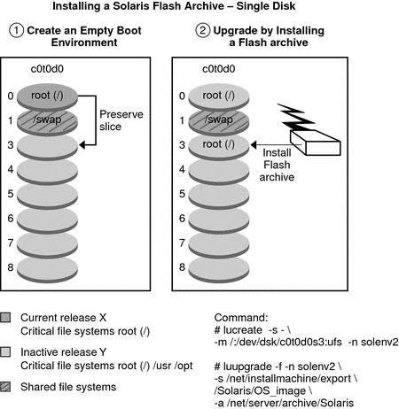Figure 2-9 Installing a Solaris Flash Archive on Two Disks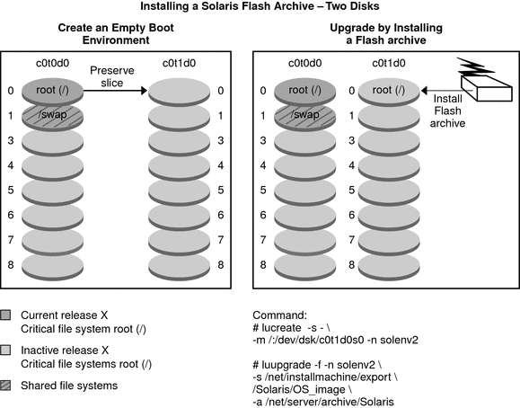Activating a Boot EnvironmentWhen you are ready to switch and make the new boot environment active, you quickly activate the new boot environment and reboot. Files are synchronized between boot environments the first time that you boot a newly created boot environment. “Synchronize” means that certain system files and directories are copied from the last-active boot environment to the boot environment being booted. When you reboot the system, the configuration that you installed on the new boot environment is active. The original boot environment then becomes an inactive boot environment.
Figure 2-10 shows a switch after a reboot from an inactive to an active boot environment. Figure 2-10 Activating an Inactive Boot Environment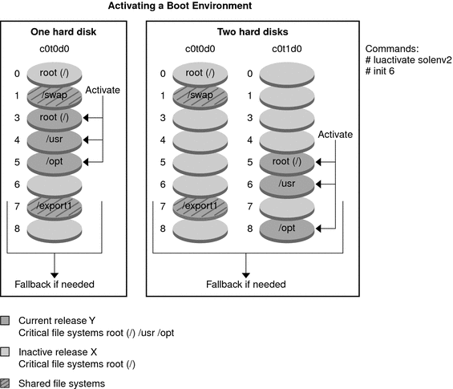Falling Back to the Original Boot EnvironmentIf a failure occurs, you can quickly fall back to the original boot environment with an activation and reboot. The use of fallback takes only the time to reboot the system, which is much quicker than backing up and restoring the original. The new boot environment that failed to boot is preserved. The failure can then be analyzed. You can only fall back to the boot environment that was used by luactivate to activate the new boot environment. You fall back to the previous boot environment the following ways:
For procedures to fall back, see Chapter 6, Failure Recovery: Falling Back to the Original Boot Environment (Tasks). Figure 2-11 shows the switch that is made when you reboot to fallback. Figure 2-11 Fallback to the Original Boot Environment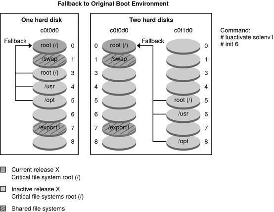Maintaining a Boot EnvironmentYou can also do various maintenance activities such as checking status, renaming, or deleting a boot environment. For maintenance procedures, see Chapter 7, Maintaining Solaris Live Upgrade Boot Environments (Tasks). |
||||||||||||||||||||||||||||||||||||||||||||||||||||||||||
|